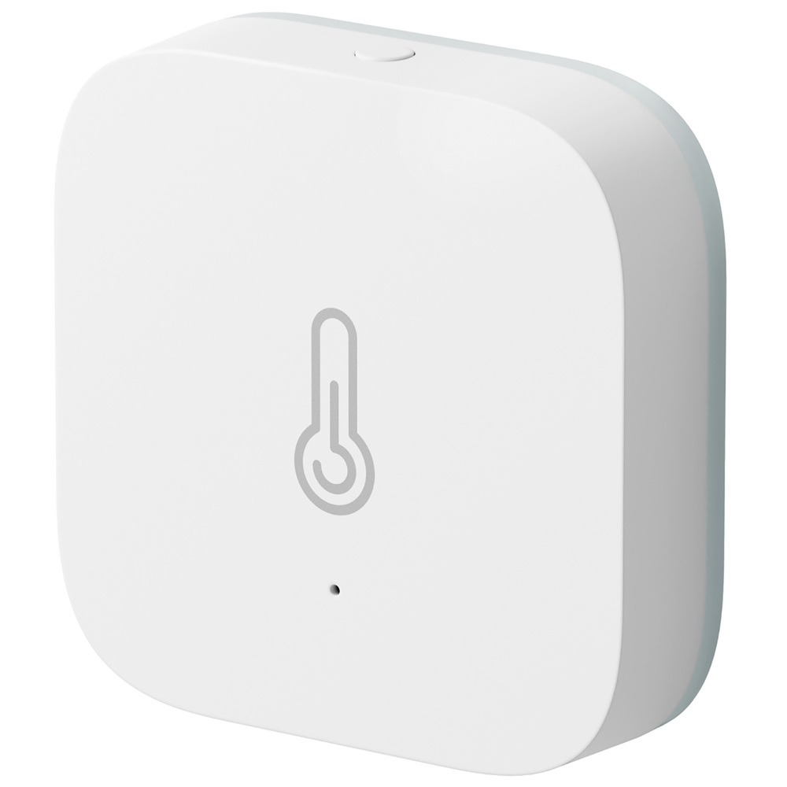

Яндекс Станция 2 с Алисой представлена в эффектном цвете черный антрацит. Лаконичный дизайн станции сочетается с широкими возможностями для развлечений и управления другими устройствами. Алиса мгновенно реагирует на голосовые команды. Что вам нужно? Найти интересный фильм по телевизору? Или зажечь лампу? Просто скажите — и Алиса мгновенно выполнит просьбу.
Характеристики:
Датчик температуры и влажности Яндекс Zigbee

Датчик температуры и влажности Яндекс Zigbee (YNDX-00523) помогает поддерживать комфортный микроклимат в помещении. Модель при синхронизации с другими устройствами может создавать необходимые сценарии в приложении Дом с Алисой.